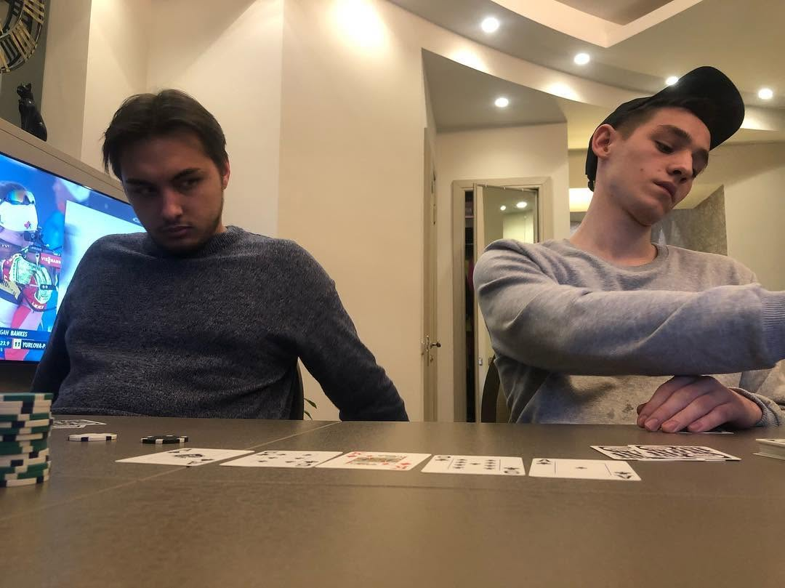
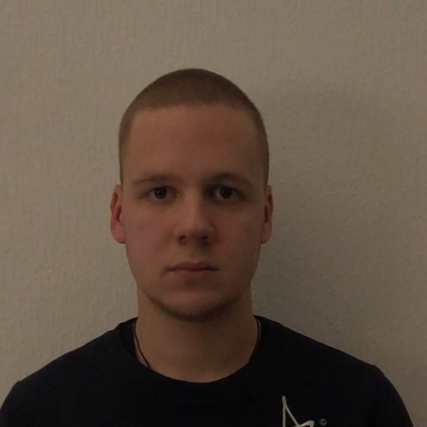
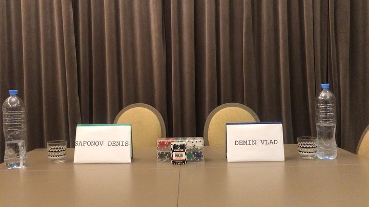
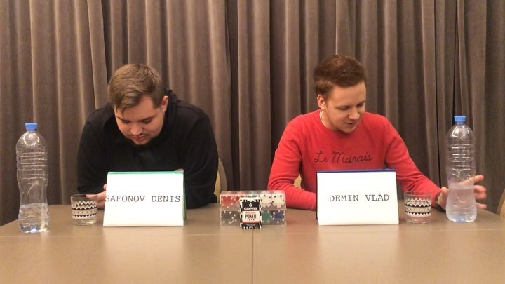
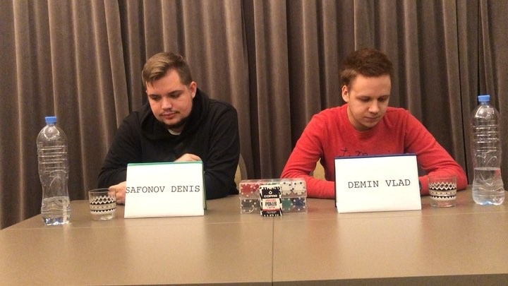

2018 — 2022 • 4 Seasons • 26 Games • ₽69,500 Total
See behind-the-scenes moments, game nights, and celebrations





Follow the Action
See behind-the-scenes moments, game nights, and celebrations




